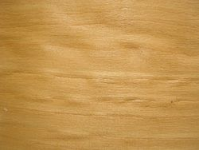

| Nyír | |
|---|---|
|  | |
| A nyír kemény lombos faanyag, Magyarországon elsősorban a közönséges nyír (Betula pendula), ritkábban a molyhos nyír (Betula pubescens) anyagát hasznosítják. | |
| Általános adatok | |
| Rönkhossz | 10…15 m |
| Rönkátmérő | 0,5…1,0 m |
| Sűrűség | 0,61 g/cm³ |
| Zsugorodás | |
| Sugárirányban | 5,3 % |
| Húrirányban | 7,8 % |
| Szilárdság | |
| Nyomó | 51 MPa |
| Hajlító | 147 MPa |
| Nyíró | 13,2 MPa |